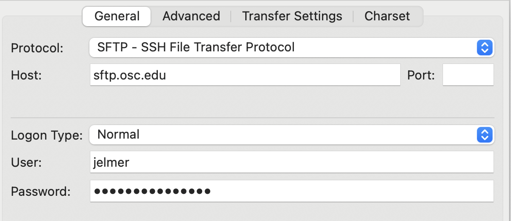
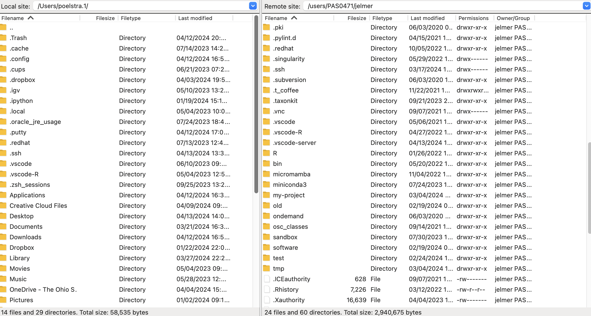
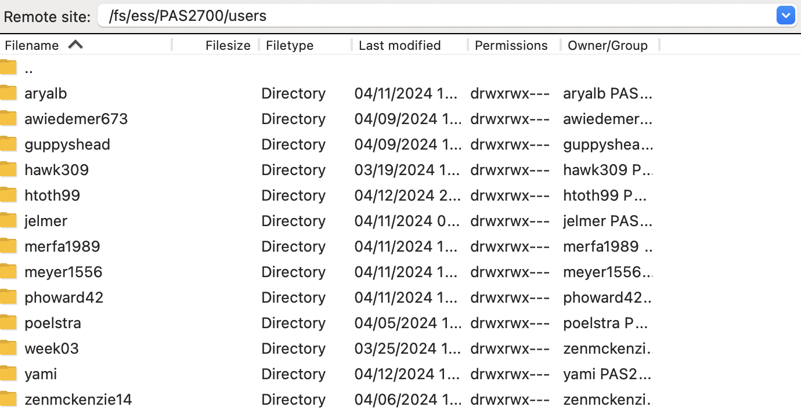

Data management at OSC and beyond
Week 6 - part II
Overview
Managing your data and results
- Keeping back-ups of raw data
- Project versus scratch dirs (and avoid your Home dir for research projects)
File transfer to and from OSC
Overview of options
In week 1, you were shown that you can upload and download files from OSC in the OnDemand Files menu, but that’s only suitable for relatively small transfers. Here is a list of methods to transfer files between your computer and OSC:
| Method | Transfer size | CLI or GUI | Ease of use | Flexibility/options |
|---|---|---|---|---|
| OnDemand Files menu | smaller (<1GB) | GUI | Easy | Limited |
| Remote transfer commands | smaller (<1GB) | CLI | Moderate | Extensive |
| SFTP | larger (>1GB) | Either | Moderate | Extensive |
| Globus | larger (>1GB) | GUI | Moderate | Extensive |
For more details, see the self-study section at the bottom of this page.
FileZilla: a GUI-based SFTP client
Here, we’ll go over what is probably overall the most convenient and versatile way to transfer files to and from OSC, since it works for transfers of any size, and is easy and quick: file transfer with a GUI-based SFTP client. There are a number of such programs, but I chose to show you FileZilla because it works on all operating systems1.
Go to the FileZilla download page — it should automatically display a big green download button for your operating system: click that and install and open the program.
To connect to OSC, find the Site Manager: click
Filein the top menu bar and thenSite Manager2. In the Site Manager:- Protocol: select “SFTP - SSH File Transfer Protocol”.
- Host: type
sftp.osc.edu(and you can leave the Port box empty). - Logon Type: Make sure “Normal” is selected.
- User: Type you OSC user name.
- Password: Type or copy your OSC password.
- Click the “Connect” button at the bottom to connect to OSC.

- Once connected, your main screen is split with a local file explorer on the left, and a remote file explorer on the right:

Transferring dirs and files in either direction is as simple as dragging and dropping them to the other side!
Your default location at OSC is your home dir in
/users/, but you can type a path in the top bar to e.g. go to/fs/ess/PAS2700/users:

Downloading files at the command line
When you need to get large files from public repositories like NCBI (e.g. reference genome files, raw reads from the SRA), I would recommend not to download these to your own computer and then transfer them to OSC, but to download them directly to OSC using commands.
wget
You can download files from any URL that will allow you using the wget command. It has many options, but basic usage is quite simple:
# This will download the file at the URL to your current working dir
wget <URL>As an example, say that we want to download the reference genome FASTA and GTF files for Culex pipiens, the focal species of the Garrigos et al. RNA-seq data set that we’ve been working with. The files for that genome can be found at this NCBI FTP webpage.
You can right-click on any of the files and then click “Copy Link Address” (or something similar, depending on your browser) — let’s copy the URL to the assembly FASTA (.fna.gz) file. Then type wget and Space in your terminal and paste the URL:
wget https://ftp.ncbi.nlm.nih.gov/genomes/all/GCA/016/801/865/GCA_016801865.2_TS_CPP_V2/GCA_016801865.2_TS_CPP_V2_genomic.fna.gz--2024-04-13 13:33:16-- https://ftp.ncbi.nlm.nih.gov/genomes/all/GCA/016/801/865/GCA_016801865.2_TS_CPP_V2/GCA_016801865.2_TS_CPP_V2_genomic.fna.gz
Resolving ftp.ncbi.nlm.nih.gov (ftp.ncbi.nlm.nih.gov)... 130.14.250.12, 130.14.250.11, 2607:f220:41e:250::12, ...
Connecting to ftp.ncbi.nlm.nih.gov (ftp.ncbi.nlm.nih.gov)|130.14.250.12|:443... connected.
HTTP request sent, awaiting response... 200 OK
Length: 172895917 (165M) [application/x-gzip]
Saving to: ‘GCA_016801865.2_TS_CPP_V2_genomic.fna.gz’
100%[=====================================================================================================================>] 172,895,917 51.7MB/s in 3.2s
2024-04-13 13:33:20 (51.7 MB/s) - ‘GCA_016801865.2_TS_CPP_V2_genomic.fna.gz’ saved [172895917/172895917]Let’s list our downloaded file:
ls -lh-rw-r--r-- 1 jelmer PAS0471 165M Aug 5 2022 GCA_016801865.2_TS_CPP_V2_genomic.fna.gzcurl
wget and curl have similar functionality, so you don’t really need to learn to use both of them.
Other genomic downloads
For reference genome downloads, NCBI also has a relatively new and very useful portal called “datasets” that also includes a CLI tools of the same name. This is especially useful if you want to download multiple or many genomes — for example, you can download all available genomes of a certain (say, bacterial) genus with a single command.
For downloads from the Sequence Read Archive (SRA), which contains high-throughput sequencing reads, you can use tools like fasterq-dump and dl-fastq. Also handy is the simple SRA explorer website, where you can enter an NCBI accession number and it will give you download links.
File permissions
File “permissions” are the types of things (e.g. reading, writing) that different groups of users (creator, group, anyone else) are permitted to do with files and dirs.
There are a couple of reasons you may occasionally need to view and modify file permissions:
- You may want to make your data read-only
- You may need to share files with other users at OSC
Viewing file permissions
To show file permissions, use ls with the -l (long format) option that we’ve seen before. The command below also uses the -a option to show all files, including hidden ones (and -h to show file sizes in human-readable format):

Here is an overview of the file permission notation in ls -l output:

In the two lines above:
rwxrwxr-xmeans:
read + write + execute permissions for both the owner (firstrwx) and the group (secondrwx), and read + execute but not write permissions for others (r-xat the end).rw-rw-r--means:
read + write but not execute permissions for both the owner (firstrw-) and the group (secondrw-), and only read permissions for others (r--at the end).
Let’s create a file to play around with file permissions:
# Create a test file
touch testfile.txt
# Check the default permissions
ls -l testfile.txt-rw-rw----+ 1 jelmer PAS2700 0 Mar 7 13:36 testfile.txtChanging file permissions
This can be done in two different ways with the chmod command. Here, we’ll focus on the method with = (set permission to), + (add permission), and - (remove permission).
For example, to add read (r) permissions for all (a):
# chmod <who>+<permission-to-add>:
chmod a+r testfile.txt
ls -l testfile.txt-rw-rw-r--+ 1 jelmer PAS0471 0 Mar 7 13:40 testfile.txtTo set read + write + execute (rwx) permissions for all (a):
# chmod <who>=<permission-to-set>`:
chmod a=rwx testfile.txt
ls -l testfile.txt-rwxrwxrwx+ 1 jelmer PAS2700 0 Mar 7 13:36 testfile.txtTo remove write (w) permissions for others (o):
# chmod <who>-<permission-to-remove>:
chmod o-w testfile.txt
ls -l testfile.txt-rwxrwxr-x+ 1 jelmer PAS2700 0 Mar 7 13:36 testfile.txtYou can also use a series of 3 numbers (for user, group, and others) to set permissions, where each number can take on the following values:
| Nr | Permission | Nr | Permission |
|---|---|---|---|
| 1 | x | 5 | r + x |
| 2 | w | 6 | r + w |
| 4 | r | 7 | r + w + x |
For example, to set read + write + execute permissions for all:
chmod 777 testfile.txtTo set read + write + execute permissions for yourself, and only read permission for the group and others:
chmod 744 file.txtMaking your data read-only
So, if you want to make your raw data (here: the files in the data/fastq dir) read-only, you can use:
Set only read permissions for everyone:
chmod a=r data/fastq/*Take away write permissions for yourself (no-one else should have it by default):
chmod u-w data/fastq/*
One tricky and confusing aspect of file permissions is that to list a directory’s content, you need execute permissions for the dir! This is something to take into account when you want to grant others access to your project e.g. at OSC.
To set execute permissions for everyone but only for dirs throughout a dir hierarchy, use an X (uppercase x):
chmod -R a+X my-dirAfter running one or both of the above commands, let’s check the permissions:
ls -l data/fastqtotal 0
-r--r--r--+ 1 jelmer PAS0471 0 Mar 7 13:41 sample001_R1.fastq
-r--r--r--+ 1 jelmer PAS0471 0 Mar 7 13:41 sample001_R2.fastq
-r--r--r--+ 1 jelmer PAS0471 0 Mar 7 13:41 sample002_R1.fastq
-r--r--r--+ 1 jelmer PAS0471 0 Mar 7 13:41 sample002_R2.fastq
# [...output truncated...]What happens when we try to remove write-protected files?
rm data/fastq/*fastqrm: remove write-protected regular empty file ‘data/fastq/sample001_R1.fastq’?You’ll be prompted for every file! If you answer y (yes), you can still remove them. (But note that people other than the file’s owners cannot overried file permissions; only if they are system administrators.)
Using symbolic links
For example to use files across projects - recall week 2 - RBA
Single files
A symbolic (or soft) links only links to the path of the original file, whereas a hard link directly links to the contents of the original file. Note that modifying a file via either a hard or soft link will modify the original file.
Create a symlink to a file using ln -s <source-file> [<link-name>]:
# Only provide source => create link of the same name in the wd:
ln -s /fs/ess/PAS2700/share/garrigos/data/fastq/ERR10802863_R1.fastq.gz
# The link can also be given an arbitrary name/path:
ln -s /fs/ess/PAS2700/share/garrigos/data/fastq/ERR10802863_R1.fastq.gz shared-fastq.fastq.gzAt least at OSC, you have to use an absolute path for the source file(s), or the link will not work. The $PWD environment variable, which contains your current working directory can come in handy to do so:
# (Fictional example, don't run this)
ln -s $PWD/shared-scripts/align.sh project1/scripts/Multiple files
Link to multiple files in a directory at once:
# (Fictional example, don't run this)
ln -s $PWD/shared_scripts/* project1/scripts/ Link to a directory:
# (Fictional example, don't run this)
ln -s $PWD/shared_scripts/ project1/scripts/
ln -s $PWD/shared_scripts/ project1/scripts/ln-shared-scriptsBe careful when linking to directories: you are creating a point of entry to the original dir. Therefore, even if you enter via the symlink, you are interacting with the original files.
This means that a command like the following would remove the original directory!
rm -r symlink-to-dirInstead, use rm symlink-to-dir (the link itself is a file, not a dir, so you don’t need -r!) or unlink symlink-to-dir to only remove the link.
Exercise: Creating symbolic links
Create a symbolic link in your
$HOMEdir that points to your personal dir in the project dir (/fs/ess/PAS2700/users/$USER).If you don’t provide a name for the link, it will be your username (why?), which is not particularly informative about its destination. Therefore, give it a name that makes sense to you, like
PLNTPTH6193-SP24orpracs-sp24.
Click for the solution
ln -s /fs/ess/PAS1855/users/$USER ~/PLNTPTH6193-SP24- What would happen if you do
rm -rf ~/PLNTPTH8300-SP21? Don’t try this.
Click for the solution
The content of the original dir will be removed.
Self study: check file integrity with checksums
TBA